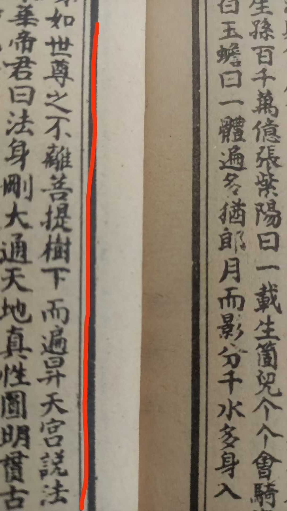
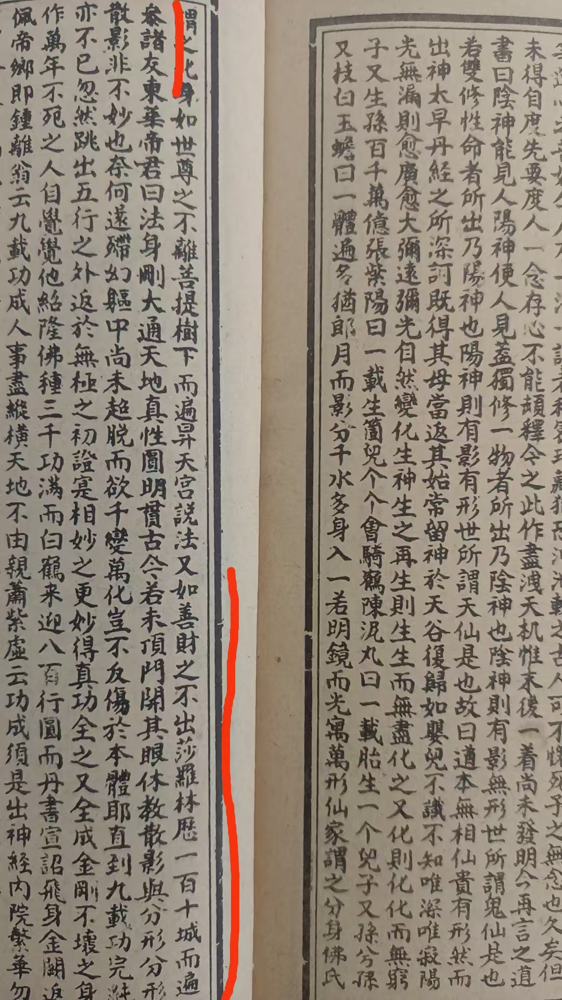
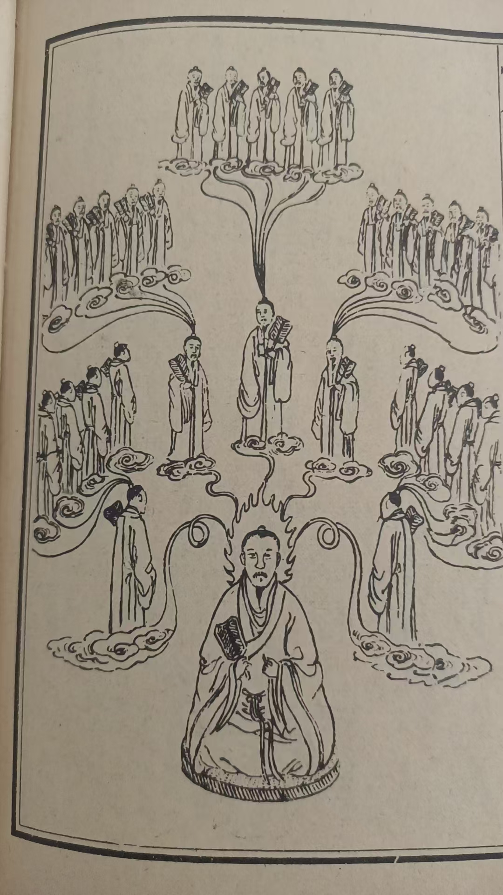
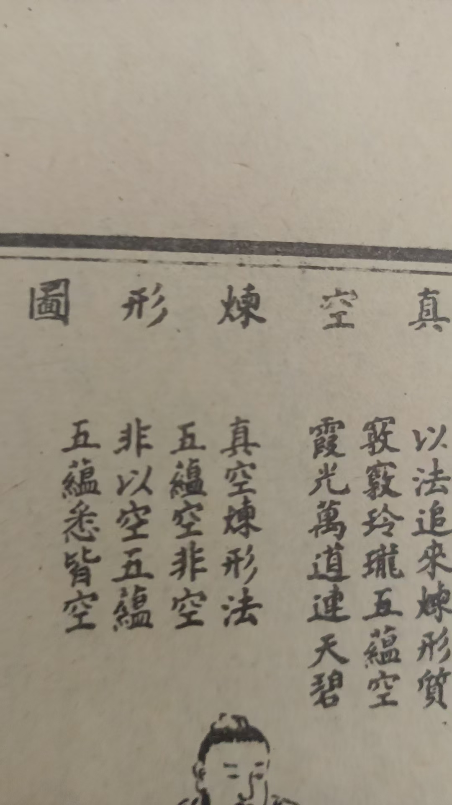

20260524打坐，要清晰的看到自己所做
修炼修行

必须长时间入定
打坐到感觉不到自己了
这叫空觉
划线的几句
释迦牟尼，在菩提树下打坐
遍升天宫说法，而实际并没有离开这菩提树
啥意思，分身去了
第二句，经里说善财，走了一百多城，遍参诸友，学的成佛之法，但是人并没有走出莎罗林
师父，打坐的时候总感觉是睡着了，就是有一时间段没有任何的思想了

打坐，要清晰的看到自己所做
空觉，非常清晰，感觉不到自己存在，有感觉到周围都是空明
有一部分清晰，有一部分什么感觉都没有了
空觉，妙觉
时间短了，进不了状态
所以，元音心中心法，要求两小时入门
八小时勤修
太难坚持了
枯坐也要坐够八小时
世上无难事，只怕有心人
双盘能坐半小时太难
[憨笑][憨笑][憨笑]
半小时也在一直喊腿疼
无用功，
只能算基本功
还不扎实
我逐渐延长双盘时间，下一步双盘坐睡觉

真空炼形
咱们只见到玉液还丹炼形
九转还丹炼形
这个真空炼形
就是搬运自己
真我离开肉身，搬运这个肉身形壳
一层一层细细参悟
开了智慧，一切修行法门心知肚明
不用等我说一句，练一句
用心参悟